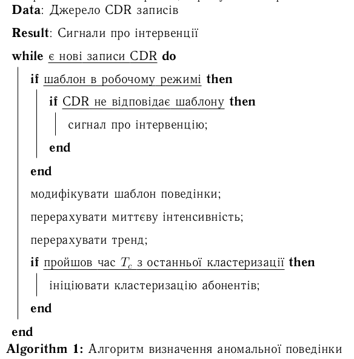
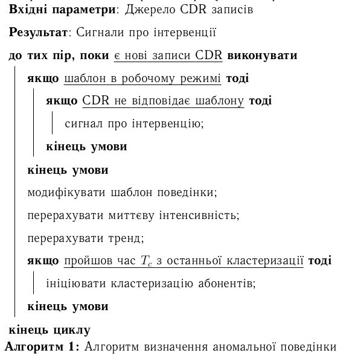

There are several packages for typesetting pseudocode in LaTeX documents; I worked with algorithm2e.
Pseudocode can be included as plain monospaced text, but it looks much better when properly structured with syntax highlighting.
I won’t cover general usage of algorithm2e here, as detailed guides are readily available (Wikibooks, Harrix blog, PDF documentation).
To use the package in Ukrainian-language documents (diploma theses, scientific papers), localized keywords and operators are required. Here is my preamble translation snippet:
\SetKwInput{KwData}{Вхідні параметри}
\SetKwInput{KwResult}{Результат}
\SetKwInput{KwIn}{Вхідні дані}
\SetKwInput{KwOut}{Вихідні дані}
\SetKwIF{If}{ElseIf}{Else}{якщо}{тоді}{інакше\ якщо}{інакше}{кінець\ умови}
\SetKwFor{While}{до\ тих\ пір,\ поки}{виконувати}{кінець\ циклу}
\SetKw{KwTo}{від}
\SetKw{KwRet}{повернути}
\SetKw{Return}{повернути}
\SetKwBlock{Begin}{початок\ блоку}{кінець\ блоку}
\SetKwSwitch{Switch}{Case}{Other}{Перевірити\ значення}{та\ виконати}{варіант}{інакше}{кінець\ варіанту}{кінець\ перевірки\ значень}
\SetKwFor{For}{цикл}{виконувати}{кінець\ циклу}
\SetKwFor{ForEach}{для\ кожного}{виконувати}{кінець\ циклу}
\SetKwRepeat{Repeat}{повторювати}{до\ тих\ пір,\ поки}
\SetAlgorithmName{Алгоритм}{алгоритм}{Список алгоритмів}
Before:

After:

Migrated from legacy blog antigluk.blogspot.com.